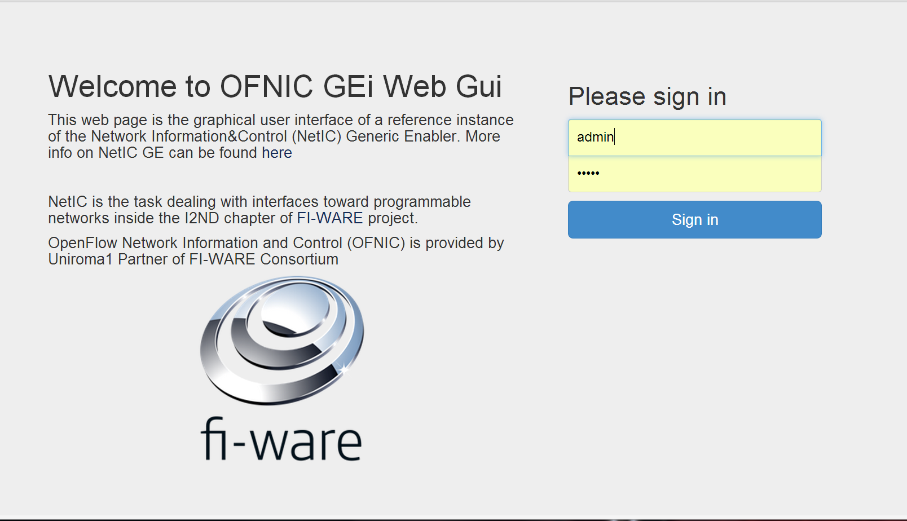
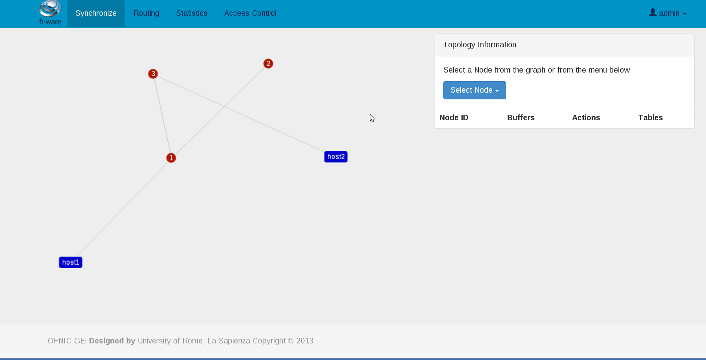

Welcome to FIWARE OFNIC GE’s documentation!¶
Refer to this page for more general information about OFNIC.
User & Programmers¶
Introduction¶
OFNIC provides a programmable interface to control and retrieve information and control Openflow Networks. The interface is based on the RESTful paradigm and is powered by a Web Server developed in Python programming language. OFNIC relies on the Openflow protocol in order to abstract and virtualize forwarding capabilities of the Openflow Network. This GEi is an extension to the OpenDaylight Openflow controller.
OFNIC is composed of many modules which communicate whith each other with events. It is designed with an event-driven paradigm also to manage information that comes from the network. The OFNIC RESTful interface is an instance of the NetIC API ( NetIC Generic Enabler Open Specifications can be found here).
Goal of this document is to provide a useful guide for developers who want to build new applications based on the NetIC API, and a guide for users that might utilize the provided GUI application. Specific sections are dedicated to developer tools intended to help them during development, test and deployment.
User Guide¶
The NetIC_RESTful_API reference provides a page which describes how to use this API in details. It includes a set of commands, which can be used to manipulate and instantiate network resources physical or virtual. Since NetIC RESTful API is based on the HTTP protocol there are a rich variety of tools, which can be used to access the OFNIC GEi interface. The sections of the Programmer Guide will go into more detail on how to use and develop against NetIC RESTful API.
OFNIC GUI¶
The OFNIC GEi is released with a GUI feature. The NetIC API users might utilize the GUI to navigate the exposed RESTful webservices of the GEi. The GUI has been developed in Javascript language, and uses the FIWARE site template. The web GUI comes embedded in the OFNIC source package release, see the OFNIC Installation-and-Administration guide to download the package.
The GUI relies on the OFNIC GEi, it should up and running correctly. To access the GUI from a web browser navigate to: http://localhost/gui
The GUI page that appears is shown in the figure below.
The default username is ‘admin’ and can be authenticated with the password ‘admin’. After logging in, one can note that the GUI is composed of four navigation tabs: Synchronization,Statistics, Routing, and Access Control. The Synchronization tab shows the network topology with an interactive diagram. Network nodes are clickable and additional information is shown if a node is selected. For example the number of Actions or Ports. Moreover the Displayed ports are clickable and show to which other network entity is the selected node connected to.
The Statistics navigation tab, concerns about the presentation of network statistics collected by the OFNIC GEi. The dynamic network topology is present so the user can select nodes he might want to monitor from the graph. The Statistics tab is shown in the figure below.
The presence of the Openflow network is not mandatory, if no network is attached to the OFNIC GEi, the following warning will appear on the GUI: “no network nodes detected”
Programmer Guide¶
This section describes the way a programmer can interact ith the OFNIC GEi. It is assumed that the OFNIC GEi is up and running. See the OFNIC Installation-and-Administration guide for this.
Examples¶
In this example the OFNIC GEi is connected to an Openflow network composed of three Openflow nodes. The nodes run Openvswitch for implementing the Openflow protocol. The OFNIC GEi is located at the same machine from which the browser is used. Using the browser, type in the location bar the following URL string and then press Enter.
The result displayed, should be the list of nodes present in the network:
{ “paths”:[], “nodes”:[ “00:00:00:00:00:00:00:02”, “00:00:00:00:00:00:00:01”, “00:00:00:00:00:00:00:03”] “hosts”:[]}
As one can note from the examples, all response bodies are in JSON format. For the full RESTful API specification refers to https://fiware-uniroma1.github.io/FIWARE-OFNIC/